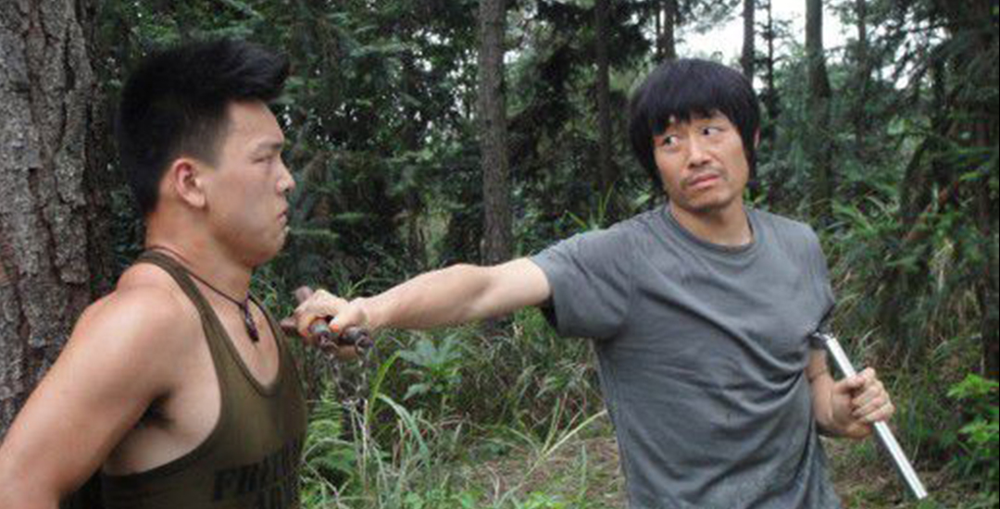
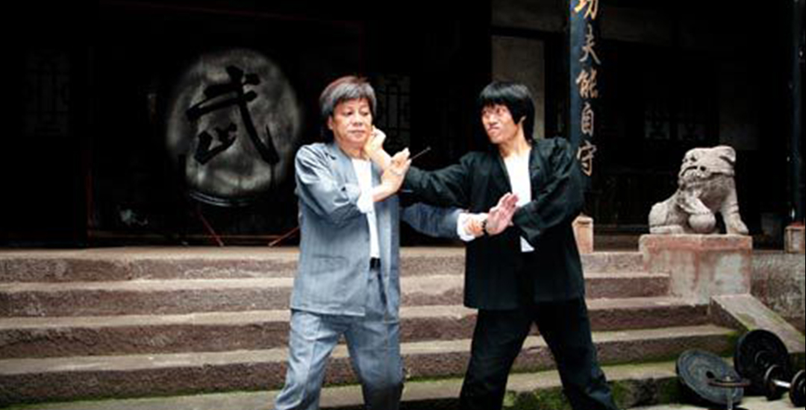

圆梦集团旗下深圳圆梦影业传媒有限公司致力于为本土影视娱乐行业提供更多优质内容，是一家以投资制作影视、演艺经纪、广告、新媒体、等多领域运营的娱乐传媒公司。圆梦影视秉承高品质，大制作的理念，以铸造优质品牌为目标，汇聚精英，已发展成为具有跨媒体、多元化的娱乐传媒公司。
陈天星导演作为圆梦集团的战略合作伙伴，其创作作品圆梦集团理应提供支持和投入，圆梦集团旗下影视版块的业务也将在一次次磨合中逐渐走上正轨，成为新的业绩增长点。
著名导演陈天星在对圆梦集团价值观和商业模式的高度认可并深入合作的情况下，其形象已成为圆梦集团的一张最具姿彩的名片，而圆梦集团未来也将最大限度的支持陈天星导演创作和拍摄出更加优秀的影视作品，并携手陈天星导演及其团队，用正能量和新创意进行艺术创作，传递出正能量的价值观和世界观，为中国功夫电影，为中国电影做出更大的贡献。
陈天星导演自幼研习李小龙截拳道功夫，曾师从世界功夫巨星李小龙之师弟梁挺先生学习咏春拳被媒体誉为“李小龙截拳道功夫精神最忠实的追随者与传播者”。
其参拍影视作品《英雄无界》《李小龙外传》《截拳道》《终极硬汉》《功夫骄子》《乡关何处》《功夫战斗机》《狂蟒惊魂》等近20部影片。2011年，陈天星导演、主演电影《双截棍》荣获第五届德国科隆国际电影节最高奖“组委会大奖”。2018年主演电影《德皮》亮相法国戛纳电影节，成为戛纳中国电影荣誉大奖的最大赢家，斩获《戛纳金蝶兰奖》“最佳男主角”（陈天星）、“最佳导演奖”（胡艺川）、“最佳影片奖”三项大奖！